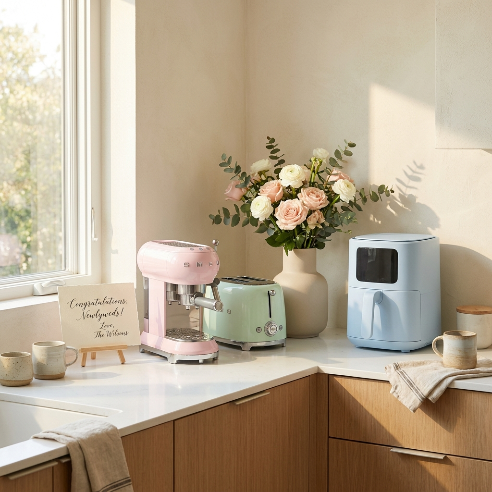

친한 친구 결혼 선물 가전 vs 현금 축의금 얼마가 적당한가 — 금액대별 예산 비교표와 센스 있는 선물 고르는 법
가장 아끼는 절친의 결혼식에서는 현금 봉투만 건네는 것보다 '기본 식대 보전용 현금 축의금(10만~20만 원)'과 '신혼집에 꼭 필요한 소형 가전 선물(15만~30만 원)'을 분할하여 병행하는 방식이 요즘 2030 세대에서 가장 큰 만족도를 얻고 있습니다.
신혼부부는 결혼식 당일 식장 식대(1인당 평균 6만~9만 원)를 즉시 정산해야 하므로 현금 축의금이 반드시 필요하며, 동시에 친구의 정성이 담긴 실용적인 가전제품은 신혼집에 두고두고 기억에 남기 때문입니다.
친구와의 친밀도에 따라 단독 선물 시 20만~30만 원대, 모임 친구들끼리 펀딩할 경우 1인당 10만~15만 원씩 모아 50만~100만 원 상당의 중대형 가전을 선물하는 것이 부담 없이 가장 센스 있는 최적의 예산 배분입니다.
정성스럽게 리본 포장된 신혼 가전 선물 상자와 축의금 흰 봉투가 놓인 테이블 / AI 제작 이미지
01 | 절친의 결혼 소식: 현금 봉투만 줄까, 특별한 선물을 함께할까?
학창 시절을 함께 보낸 죽마고우나 사회생활의 든든한 버팀목이 되어준 가장 친한 친구가 결혼한다는 소식을 들으면 누구나 깊은 고민에 빠집니다.
"일반 지인처럼 축의금 봉투에 10만 원만 넣고 말자니 성의가 없어 보이고, 그렇다고 가전제품만 선물하자니 친구가 식대 정산할 때 곤란하지 않을까?" 하는 현실적인 걱정 때문입니다.
결론부터 말씀드리면, 현금과 선물은 대립되는 개념이 아니라 '상호 보완'되는 관계입니다.
예식장 현실과 신혼부부의 실제 살림살이를 모두 배려하는 센스 있는 축의 문화를 위해 금액대별 기준과 선물 가이드라인을 알기 쉽게 정리해 드립니다.
02 | 친밀도와 상황에 따른 현실적 축의금·선물 예산 기준표
경조사비는 법으로 정해진 규격이 없는 만큼 사회적 통념과 본인의 경제적 여건을 종합적으로 고려해야 합니다.
| 친구와의 관계 및 상황 |
권장 총 예산 범위 |
추천 배분 방식 (현금 vs 선물) |
특징 및 실속 팁 |
| 일반 지인·직장 동료 |
10만 원 (단독 참석 시) |
현금 축의금 100% |
식장 참석 시 식대(7~8만 원) 감안 |
| 친한 친구 (단독 전달) |
20만 ~ 30만 원 |
현금 10만 원 + 소형 가전 15만~20만 원 |
식대 보전 + 기억에 남는 선물 조화 |
| 죽마고우·베스트 프렌드 |
30만 ~ 50만 원 |
현금 20만 원 + 프리미엄 가전 20만~30만 원 |
친구가 직접 고른 위시리스트 가전 결제 |
| 친구 모임 (3~5인 펀딩) |
총 60만 ~ 100만 원
(1인당 15만~20만 원) |
모임 이름으로 대형 가전 1대
+ 식장 당일 각자 식대 5~10만 원 봉투 |
로봇청소기, 음식물처리기, 식기세척기 등 고가 가전 해결 |
위 기준표처럼 친한 친구라면 총 예산 20만~30만 원 선에서 '현금 10만 원 + 선물 15만 원' 조합으로 나누는 것이 주는 사람도 부담이 덜하고 받는 친구 입장에서도 가장 실용적입니다.
03 | 현금 축의금의 장단점: 신혼부부 식대 정산과 예식장 현실
왜 친한 친구라 하더라도 선물만 100% 주는 것보다 현금을 섞는 것이 좋을까요?
최근 웨딩홀 식대는 수도권 기준 1인당 6만 5천 원에서 8만 5천 원, 호텔 예식은 10만 원을 훌쩍 넘어섰습니다.
신혼부부는 예식이 끝난 직후 웨딩홀 정산실에서 하객 보증 인원에 대한 수천만 원의 식대를 당일 축의금으로 즉시 현장 결제해야 합니다.
만약 친한 친구들이 모두 선물만 사주고 당일 축의금 봉투를 내지 않는다면, 신혼부부는 식대 정산 시점에 자금 회전의 압박을 받을 수 있습니다.
따라서 아무리 비싼 선물을 미리 사주었더라도, 결혼식 당일 식장에 참석하여 식사를 한다면 최소한 본인의 식대를 웃도는 10만 원 상당의 봉투를 접수대에 내는 것이 신혼부부를 위한 깊은 배려입니다.

밝고 화사한 신혼집 거실에 어울리는 감성 주방 가전제품들과 축하 카드 / AI 제작 이미지
04 | 소형 가전 선물할 때 절대 겹치지 않는 센스 있는 확인 요령
결혼 선물에서 가장 난감한 순간은 '똑같은 제품이 2개 이상 들어오는 것'입니다.
에어프라이어나 커피머신, 토스터기 등은 친구뿐만 아니라 회사 동료나 친척들에게도 흔히 선물받는 단골 품목이기 때문입니다.
서프라이즈 선물이라는 명목으로 상의 없이 불쑥 결제했다가 중고 거래 앱에 재판매되는 안타까운 상황을 방지하려면 아래 3단계를 꼭 거치세요.
💡 실패 없는 선물 품목 선정 3단계 요령
1단계. 직접 물어보기(위시리스트 요청): "OO아, 혼수 가전 중에 혹시 아직 안 산 소형 가전 있어? 예산 20만 원 안팎으로 생각 중인데 네가 맘에 드는 모델 링크 주면 내가 결제할게!"라고 솔직하게 묻는 것이 요즘 가장 선호되는 방식입니다.
2단계. 카카오톡 선물하기 위시리스트 활용: 친구가 카카오톡 위시리스트에 담아둔 가전이 있는지 확인하고 옵션(색상)까지 일치시켜 선물합니다.
3단계. 배송 타이밍 확인: 신혼집 입주 전에는 짐을 둘 곳이 마땅치 않으므로, 신혼여행에서 돌아오는 입주일이나 집들이 일정에 맞춰 배송일을 조율하세요.
05 | 신혼부부가 가장 선호하는 10만~30만 원대 인기 가전 베스트 5
실제 신혼부부 설문조사에서 만족도 상위권을 차지한 검증된 소형 가전 리스트입니다.
| 가전 품목 |
예상 가격대 |
신혼부부 선호 이유 및 추천 포인트 |
| 캡슐 커피머신 (네스프레소 등) |
15만 ~ 25만 원 |
홈카페 감성 1순위. 매일 아침 커피를 마실 때마다 선물한 친구를 떠올리게 됨 |
| 무선 핸디 스팀다리미 |
10만 ~ 18만 원 |
출근 전 셔츠나 블라우스를 1분 만에 펴는 필수템. 크기가 작아 보관 용이 |
| 스마트 체중계 & 인바디 |
8만 ~ 15만 원 |
신혼부부 건강 관리 필수품. 인테리어를 해치지 않는 깔끔한 디자인 |
| 감성 오브제 가습기·공기청정기 |
15만 ~ 30만 원 |
안방 침실용 서브 가전으로 제격. 가을·겨울 결혼식 선물로 계절감 최고 |
| 음식물처리기 (미니형/건조형) |
30만 ~ 45만 원 |
신혼 생활의 삶의 질을 수직 상승시키는 3대 신가전. 모임 펀딩 품목 1위 |
06 | "선물 + 현금 분할" 방식의 올바른 전달 예절과 축의대 접수 팁
선물과 현금을 나누어 줄 때는 전달하는 시점과 방식을 매끄럽게 구분하는 것이 중요합니다.
• 선물 전달: 가전제품은 부피와 무게가 있으므로 절대 결혼식 당일 식장에 들고 가지 마세요. 신혼부부가 짐을 챙기느라 정신이 없습니다. 예식 1~2주 전 신혼집 주소로 택배 발송하거나 모바일 교환권으로 미리 전달하세요.
• 식장 축의대 접수: 결혼식 당일에는 준비한 현금 봉투(10만 원 안팎)를 축의대에 정상 접수하고 식권을 수령합니다. 봉투 뒷면에 '축하한다 친구야, 가전 선물은 집으로 보냈다!'와 같은 짧은 메모를 남기면 혼주와 친구가 축의 장부를 정리할 때 따뜻한 감동을 받게 됩니다.
07 | 친구들끼리 돈 모아 '대형 가전' 펀딩할 때 주의할 점과 룰
동창 모임이나 직장 동기 3~5명이 모여 한 번에 큼직한 가전을 해줄 때는 깔끔한 사전 조율이 필수적입니다.
• 총무 1인 지정: 계좌 개설과 입금 확인, 영수증 증빙을 담당할 총무를 정합니다.
• 친구에게 제품 선택권 100% 위임: 신혼집 인테리어 톤앤매너(화이트, 비스포크, 오브제 등)와 주방 빌트인 치수가 정확해야 하므로, 친구가 원하는 정확한 모델명과 색상을 받아 총무가 결제합니다.
• AS 및 영수증 전달: 대형 가전은 추후 무상 보증 수리를 위해 전자 영수증 캡처본을 친구에게 꼭 전송해 주어야 합니다.
08 | 선물과 함께 건네는 진심 어린 결혼 축하 손편지·문자 문구 예시
선물 상자 안이나 카카오톡 메시지에 곁들이면 마음을 100배 더 전달할 수 있는 문구 예시입니다. 복사해서 편하게 사용하세요.
💌 절친 결혼 축하 메시지 템플릿
[문구 예시 1: 감동과 진심]
"OO아, 늘 곁에서 든든하게 힘이 되어주던 네가 드디어 평생의 짝을 만나 가정을 이룬다니 내 일처럼 기쁘고 벅차다. 두 사람이 함께 걸어갈 앞날에 늘 따뜻한 웃음과 행복만 가득하길 진심으로 바랄게. 신혼집에서 유용하게 쓰길 바라며 작은 선물 보낸다. 결혼 축하해!"
[문구 예시 2: 유쾌하고 센스 있는 문구]
"드디어 OO이가 유부월드에 입성하는구나! 신혼집에서 매일 아침 커피 한잔 마실 때마다 내 생각 잊지 말고 하라고 머신 보냈다. 싸우지 말고 알콩달콩 예쁘게 잘 살아라! 식장에서 제일 멋진 모습으로 보자!"
09 | 친구 결혼 선물 및 축의금 고민 해결을 위한 종합 체크리스트 & FAQ
마지막으로 축의 준비를 완벽하게 끝낼 수 있는 체크리스트입니다.
📋 친구 결혼 준비 최종 점검표
[ ] 친구에게 가전 중복 여부 확인 완료 (위시리스트 체크)
[ ] 대형 가전의 경우 신혼집 가로·세로 규격 및 전압 확인
[ ] 선물 배송지(신혼집 주소) 및 수령 희망일 조율
[ ] 결혼식 당일 현금 축의금 봉투 준비 (식대 감안 10만 원 안팎)
[ ] 축하 카드 및 모바일 축하 메시지 준비
❓ 자주 묻는 질문 FAQ
Q1. 결혼식에 참석하지 못하는데 선물만 보내도 되나요?
A1. 피치 못할 사정으로 불참하신다면 15만~20만 원 상당의 가전 선물을 신혼집으로 보내시거나, 현금 10만~20만 원을 모바일 계좌이체로 보내며 정중한 불참 사유와 축하 메시지를 전하시면 충분히 예의를 갖추는 것입니다.
Q2. 백화점 상품권으로 주는 것은 어떤가요?
A2. 아주 훌륭한 대안입니다. 현금의 실용성과 선물의 정성을 동시에 갖추고 있어 신혼부부가 필요한 가구나 침구를 보탤 때 자유롭게 쓸 수 있어 선호도가 매우 높습니다.
#친구결혼선물
#결혼축의금얼마
#신혼가전선물
#축의금예산비교
#소형가전추천
#결혼선물펀딩
#결혼축하문구
#식대축의금
#경조사예절
#신혼부부선물